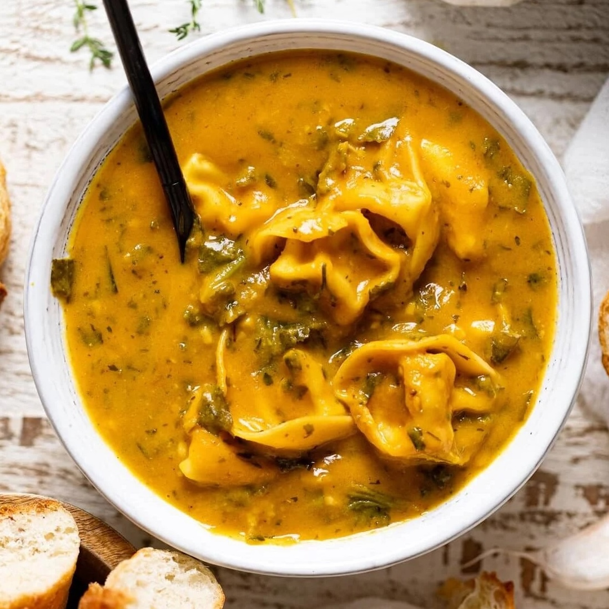

Creamy Pumpkin Tortellini

Delicious Creamy Pumpkin Tortellini
Servings: 6
Time: 30m
Ingredients
- 500g Tortellini
- 1 tbs Butter
- 3 tbs Chopped Onions
- 1 cup Mashed Pumpkin
- 1 cup Cream
- 1 tbs Minced Fresh Parsley
Steps
- Cook the pumpkin in a little bit of water until soft, then mash when ready
- Start to cook the pasta
- Meanwhile, in a large pan, heat butter over medium heat. Add the onion
- Add pumpkin and nutmeg; cook and stir 1 minute longer. Stir in cream; bring to a boil. Reduce heat to medium-low; simmer, uncovered, 4-5 minutes or until thickened, stirring occasionally. Remove from heat and spice
- Add the pasta; toss with sauce, adding enough reserved pasta water to coat pasta